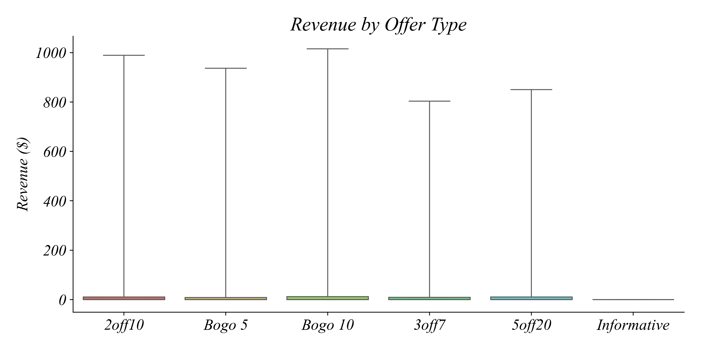
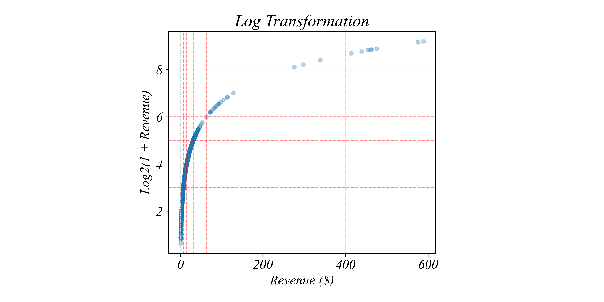
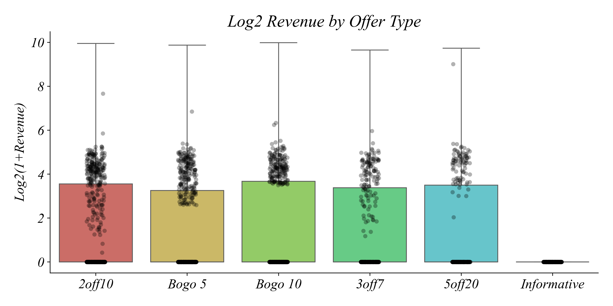
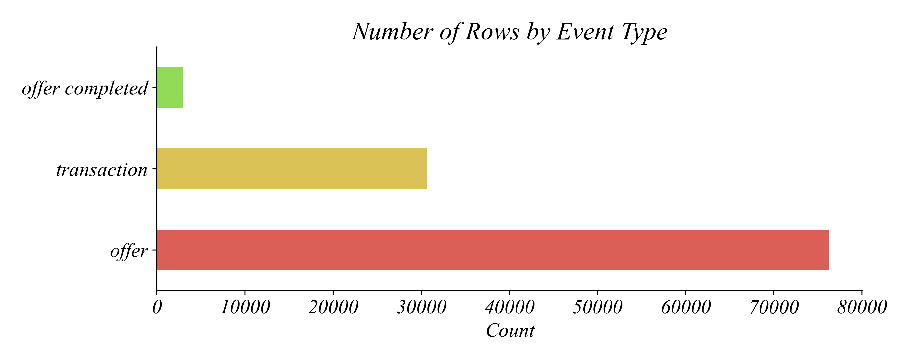
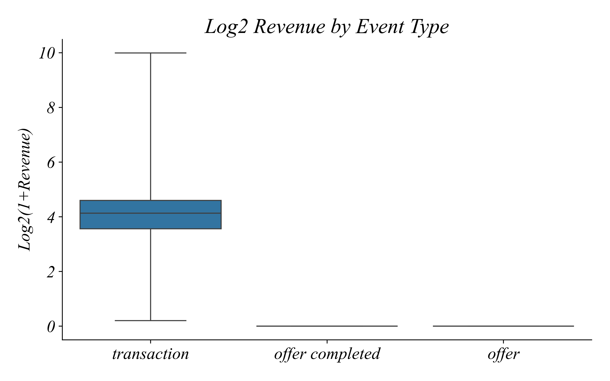
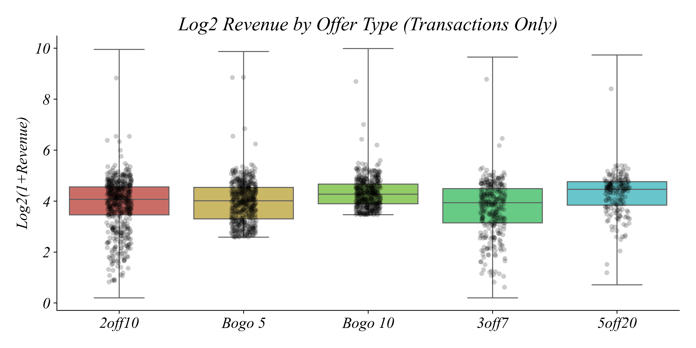
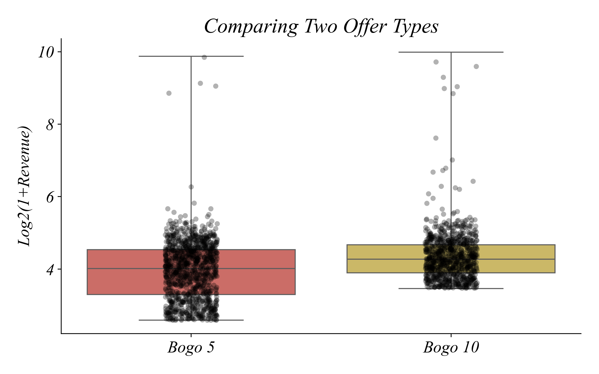
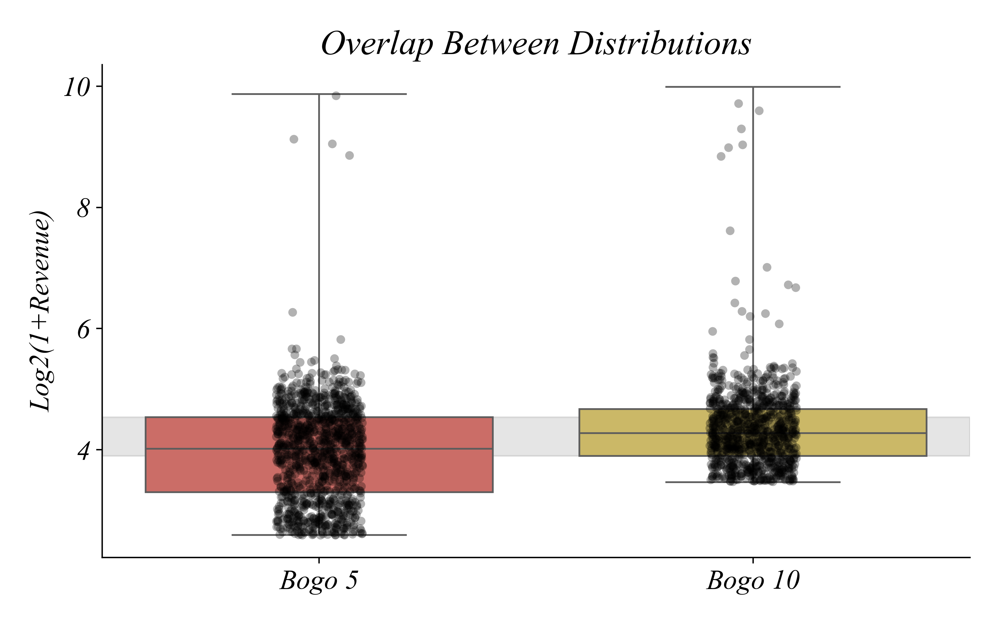

| Event | Revenue | Offer ID | |
|---|---|---|---|
| 0 | transaction | 34.56 | 2off10 |
| 1 | transaction | 18.97 | 2off10 |
| 2 | transaction | 33.90 | Bogo 5 |
| 3 | transaction | 18.01 | Bogo 10 |
| 4 | transaction | 19.11 | Bogo 10 |
The economist’s data analysis skillset.
How do buyers respond to different discount structures?
Question: Which incentive structure affects buying behavior the most?
Let’s load the data and take a look
| Event | Revenue | Offer ID | |
|---|---|---|---|
| 0 | transaction | 34.56 | 2off10 |
| 1 | transaction | 18.97 | 2off10 |
| 2 | transaction | 33.90 | Bogo 5 |
| 3 | transaction | 18.01 | Bogo 10 |
| 4 | transaction | 19.11 | Bogo 10 |
> which would we expect customers to respond most to: Bogo 5 or Bogo 10?
Visualize the data to answer whether Bogo 5 or Bogo 10 has higher average spending.
The distribution of revenue by offer type.
> hard to see — why are so many values compressed at zero?
Each unit = a doubling of spending
| Revenue | log2_Revenue | |
|---|---|---|
| 0 | 34.56 | 5.152183 |
| 1 | 18.97 | 4.319762 |
| 2 | 33.90 | 5.125155 |
| 3 | 18.01 | 4.248687 |
| 4 | 19.11 | 4.329841 |
> log2(1+$7) = 3, log2(1+$15) = 4, log2(1+$31) = 5
The transformation spreads out skewed data
> x-axis is compressed at low values; y-axis spreads them out evenly
Create a boxplot with the log-transformed variable to better see the distribution.
Create a boxplot of log revenue log2_Revenue.
Now we can see the data better.
> why are there so many zeros?
What’s in the Event column?
Not all rows are purchases
> most rows are offers, not transactions
Where is revenue coming from?
Only transactions have revenue
> offers and completions have zero revenue — that’s why we see so many zeros
Every row is a real purchase.
> which offer type has higher spending?
Calculate the mean, standard deviation, and count of log revenue by offer type.
Average log spending by offer type
| mean | std | count | |
|---|---|---|---|
| Offer ID | |||
| 2off10 | 3.89 | 1.03 | 8569 |
| 3off7 | 3.75 | 1.06 | 4698 |
| 5off20 | 4.31 | 0.89 | 3239 |
| Bogo 10 | 4.33 | 0.65 | 6308 |
| Bogo 5 | 3.95 | 0.81 | 7803 |
> 5off20 has the highest mean
> Bogo 10 has a higher mean than Bogo 5
> but is this the whole story?
Filter → Transform → Group → Visualize
> you can also see this doesn’t always progress in a straight line!
Each point is one transaction
> substantial variation within each offer type
> why are there small purchases in 5off20?
Filter for just Bogo 5 and Bogo 10, then create a boxplot to compare them.
BOGO 5 vs BOGO 10: Do buyers respond differently?
> BOGO 10 has higher average spending — but look at the overlap
Many BOGO 5 buyers spent more than BOGO 10 buyers
> when distributions overlap this much, is the difference meaningful?
Is the difference real or just noise?
Question: Is this difference we observe actually meaningful?
What this unit adds to your toolkit
| Block | Part 2.2 |
|---|---|
| Variables | Numerical + Categorical |
| Structures | Cross-section |
| Operations | Filter, Log transform, Groupby |
| Visualizations | Bar chart, Boxplot, Stripplot by category |